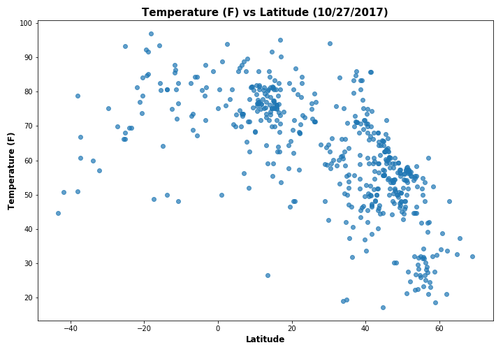

Summary: Latitude vs. X

The purpose of this project is to analysis how the weather changes as one travels closer to the equator. To accomplish our analysis, we used the Open Weather API and the CitiPy Python Library to randomly pull 500 cities from around the world to create our dataset.
After we assembled our data, we used the Pandas and Matplotlib Python libraries to analyze our data set. Our four dependent variables were: max temperature, humidity, cloudiness, and wind speed. This dashboard shows the source data and the visualizations based on our four dependent variables. We also explain the trends that is shown in our visualizations